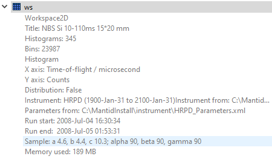

Problem
I am working with *.hdf data from the RITA-2 instrument at SINQ and am interested in using Mantid to access the following data paths:
tmp_det_counts_path = 'rnum/entry1/data/counts'
tmp_H_path = 'rnum/entry1/sample/Qh'
tmp_K_path = 'rnum/entry1/sample/Qk'
tmp_L_path = 'rnum/entry1/sample/Ql'
tmp_E_path = 'rnum/entry1/sample/energy_transfer'
tmp_mon_path = 'rnum/entry1/control/data'
tmp_UB_path = 'rnum/entry1/control/orientation_matrix'
Minimal example
ws_current = LoadSINQ(Instrument='RITA-2', Year=str(datayear), Numor='00'+str(rnum))
Commentary
In the resultant MDHistoWorkspace, I can then extract the following:
tmp_det_counts = ws_current.getSignalArray()
x_tmp = ws_current.getZDimension()
y_tmp = ws_current.getYDimension()
z_tmp = ws_current.getXDimension()
I can access ‘sample logs’ by right-clicking on the MDHistoWorkspace in the GUI. This displays incident energy, energy transfer, monitor, Qh, Qy and Qz data (see screenshot below). These can be imported and converted to TableWorkspaces using the GUI
However, I have not been able to find a way to do this within script - ‘show history’ functionality does not work on a TableWorkspace created in this way. There also does not appear to be a way to access the orientation matrix.
Not being able to access Q values or orientation matrix, I have tried to set the UB manually (found using NeXpy) and convert to DiffractionMDWorkspace. But since ws_current is not a Workspace2D or EventWorkspace this does not appear to be possible.
Questions/remarks
Is there any information I am missing that would allow me to extract the data of interest within script?
I have looked at the API reference and I suspect this issue is ignorance on my part, but have not been able to find a solution yet.
Thanks in advance,
Lewis
Hi Lewis,
I am not familiar with the LoadSINQ function but it is possible that there is some information in the .hdf file for which there is no container or attribute in the output object MDHistoWorkspace. It is possible to attach sample information to a workspace - could you please click the down-arrow on the right-hand side of the workspace and check whether there are some lattice parameters as shown in my screenshot (for a different type of workspace, unfortunately I don’t have a hdf file to check with, but I am trying to find one)?

If that’s the case you can try exporting the UB using the algorithm SaveIsawUB. In terms of extracting the other data, the following link might be helpful, if you haven’t already come across it
https://docs.mantidproject.org/nightly/concepts/MDHistoWorkspace.html#dimensions
It might be that you actually want to load in the data from the file and make your own object that better suits your needs, in which case you might want to look at the algorithm LoadFlexiNexus. Additionally there are other python libraries such as h5py and pandas which have functions to read hdf files.
Hope that helps.
Thanks,
Richard
P.S. You can try loading this UB (LoadIsawUB algorithm) and see if that works as well. UB.txt (575 Bytes)
Hi Richard,
Thanks.
Using h5py within Mantid, I can access the full data structure of the *.hdf file which solves my problem.
LoadFlexiNexus is used within LoadSINQ which also takes care of the dictionary. I haven’t looked into this too much but one option could be to create a custom dictionary file that defines the nexus paths of interest.
Converting to reciprocal lattice might not be trivial within Mantid since no instrument definition *.xml exists (to my knowledge). I started looking into this as an option since I couldn’t access (h,k,l) via the MDHisto properties - probably due to the dictionary in LoadSINQ.
Cheers,
Lewis
Hi Lewis,
It sounds like you already have the data in (H,K,L,EN) - if the issue is with extracting them then you could try something like this (assuming they are regularly binned - though you might have to be careful, I don’t know in this case whether the extents refer to the first/last bin center or bin edge).
ws=CreateMDHistoWorkspace(Dimensionality=2,Extents='-5,5,-10,10',
SignalInput=range(0,66),ErrorInput=range(0,66),
NumberOfBins='6,11',Names='Dim1,Dim2',
Units='MomentumTransfer,EnergyTransfer')
d0= ws.getDimension(0);
bin_centers = np.linspace(d0.getMinimum(),d0.getMaximum(),d0.getNBins())
But in your case perhaps it would just be better to stick with h5py and make a table workspace afterwards (if necassary). What do you intend to do in Mantid once you extract the data from the MDHistoWorkspace?
Thanks,
Richard